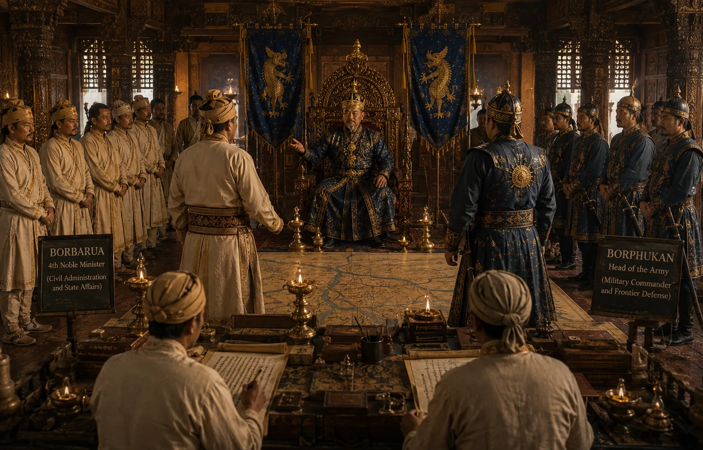

Institution of the Offices of Borbarua and Borphukan
c. 1615 · Against the Mughal Empire

Pratap Singha creates two supreme executive posts: the Borbarua (prime administrator & chief judicial magistrate) and Borphukan (viceroy & supreme military warden of Lower Assam).
Sources have not yet been catalogued for this record.
People: Langi Panisiya, Momai Tamuli Borbarua, Pratap Singha (Susenghphaa)